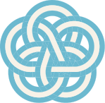
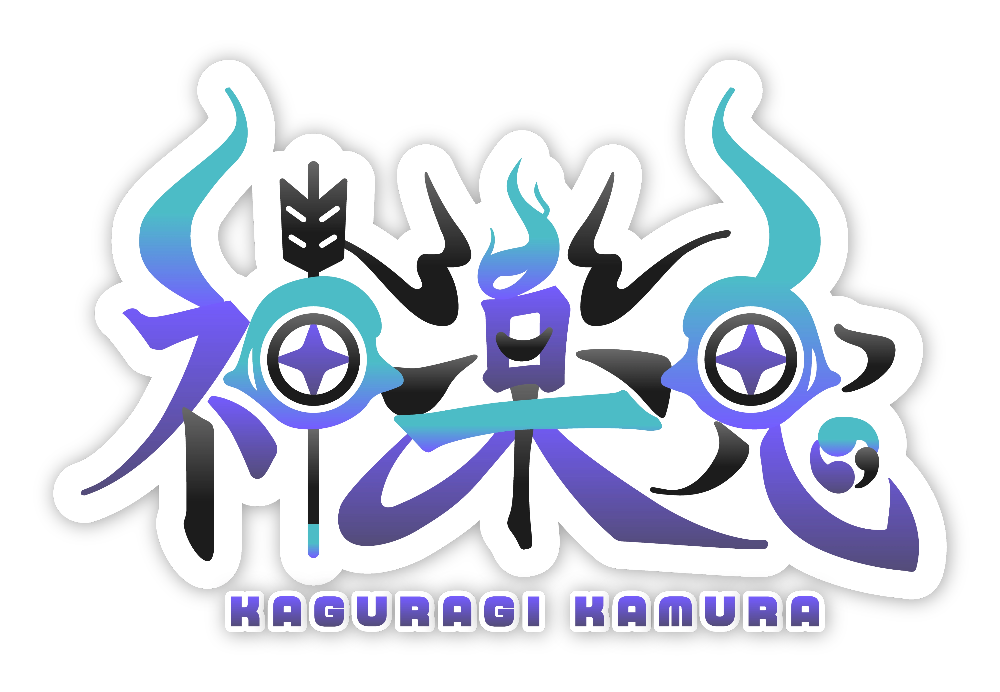
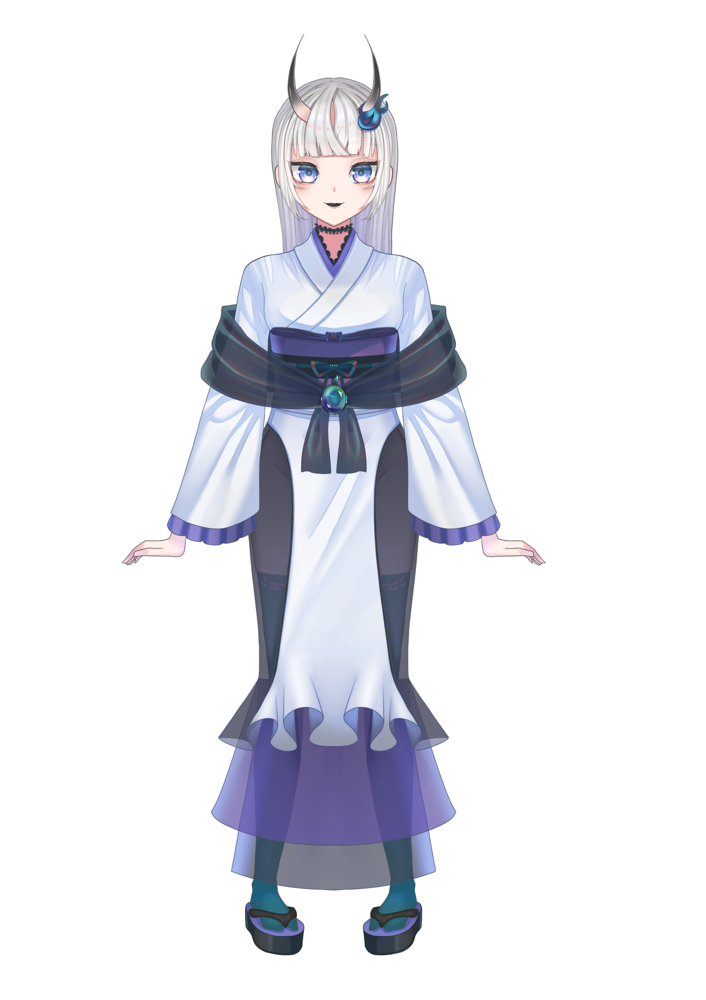
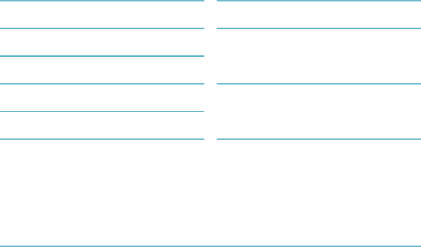

Schedule
日本時間（JST）／予定は変更になる場合があります。



山奥から出てきた小さな鬼。
お洒落が大好きで、お洋服も作っちゃう。
ただし、繊細すぎて人と話すのはちょっと苦手。
そんな自分を変えたくて、勇気を出して配信スタート！
夢はリスナーさんと一緒に大好きなお洋服屋さんをつくること！
…だけど、まだまだ人馴れしてない弱い鬼なのであった。

日本時間（JST）／予定は変更になる場合があります。
イラストと動画、小さな作品たち。
日常に、かむらをひとつ。

イラスト・デザインのお仕事については、
各サービスのページをご覧ください。